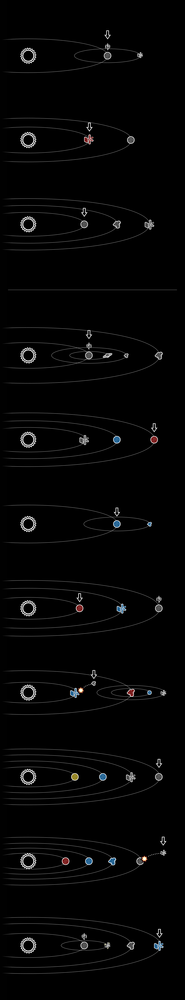

The Astrologers
You’ve managed to contact a civilization of astrologers who love to examine the heavens. What do the Astrologers need to realize about why they can’t communicate with everyone else?
| A | zagtivo |
| B | tavro |
| C | zulolam-ka |
| D | qacepo-li |
| E | honwze |
| F | fwrtiput |
| G | amelte |
| H | ofovalen-ka |
| I | utqunxe-cws |
| J | aqupo |
| K | vwynaq |
| L | utqunxe-fws |
| M | zagtivo-li |
| N | zulalam-ka |
| O | forovo |
| P | nafisa |
| Q | aqupo-li |
| R | forovo-li |
| S | pamono |
| T | qacepo |
| U | zulqin |
| V | vix |
| W | defisa |
| X | egaska |
| Y | kekcwa |
| Z | utqunxe |

qacepo zulolam-ka defisa forovo
forovo utqunxe-fws zulalam-ka pamono qacepo
zagtivo-li qacepo utqunxe-fws zulalam-ka forovo
P.S. Our Galactic Nations contact has told us that some of your English puzzle answers will be useful here, but you will *not* need to use any translations of your puzzle answers. Additionally, some artifacts may prove helpful, but none are absolutely necessary.